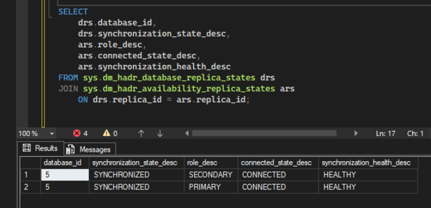

Databanken
In dit grote eind-opdracht voor databanken (SQL) heb ik een SQL-failover succesvol getest door gebruik van AlwaysOn Availability Groups. Ik heb hier dan een volledige stappenplan over uitgeschreven die een ITer zonder kennis over SQL compleet kan volgen.
Resultaat:
Succesvol gesynchroniseerd bij uitval van een server.

Uitgevoerde configuraties
| Onderdeel | Configuratie | Doel / Resultaat |
|---|---|---|
| Domeinconfiguratie | Server toegevoegd aan het domein | Centrale authenticatie mogelijk maken |
| SQL Server | SQL Server geinstalleerd op Windows Server Core | Databankserver operationeel maken |
| Firewall regels | Poorten geopend op beide member servers | Communicatie tussen servers toestaan |
| Failover Cluster | Windows Server Failover Cluster geconfigureerd | Hoge beschikbaarheid voorzien |
| AlwaysOn Availability Groups | AlwaysOn ingeschakeld op beide SQL servers | Realtime databanksynchronisatie |
| Availability Group | Availability Group aangemaakt voor database | Automatische failover mogelijk maken |
| Statuscontrole | Synchronisatie en failover getest | Succesvolle werking bevestigd |